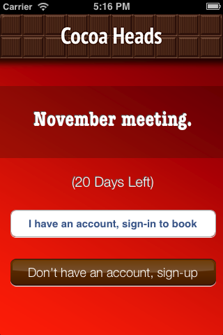
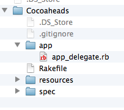
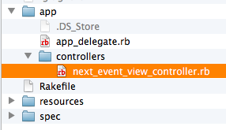
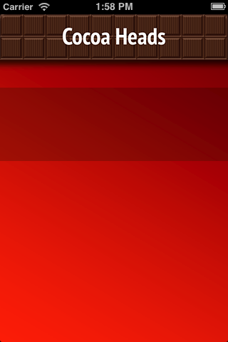
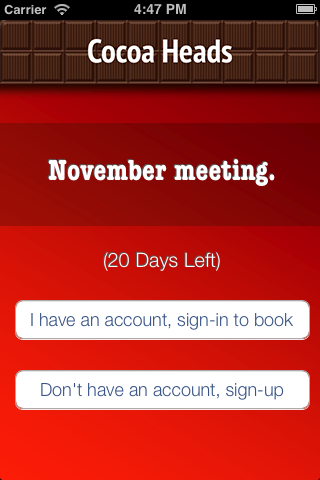
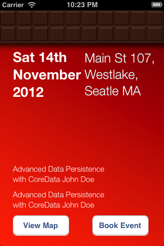
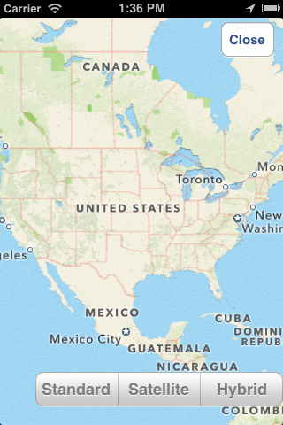
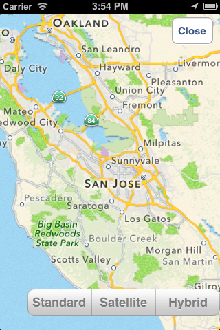
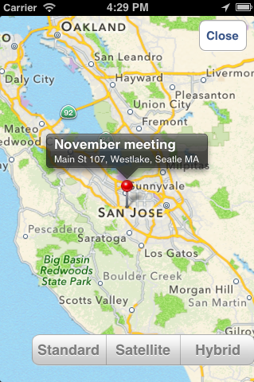

Day 1
Chapter 02 - First Application
Time Zone Converter App
It is time to create your first your rubymotion app let’s create a “time zone converter”, put the following command in your terminal:
$ motion create TimeZoneConverter
And then take a look inside
$ cd TimeZoneConverter
$ ls
You will see the following directories created
Rakefile app resources specNow feel free to execute the following command:
$ rake
If everything goes well, you will see an ugly black window.

View Controller
A view controller class provides a quite utile mechanism to manage views in iOS applications; it could coordinate efforts with the model and other view controllers in order to build an entire application.
Adding a View Controller
Open your file app_delegate.rb in app folder. And add the code between starts in it:
class AppDelegate
def application(application, didFinishLaunchingWithOptions:launchOptions)
****************************************************************
@window = UIWindow.alloc.initWithFrame(UIScreen.mainScreen.bounds)
@window.rootViewController = RootViewController.alloc.init
@window.makeKeyAndVisible
****************************************************************
true
end
end
Now create a new file named root_view_controller.rb in app folder and add the following code:
class RootViewController < UIViewController
def viewDidLoad
view.backgroundColor = UIColor.scrollViewTexturedBackgroundColor
end
end
Save your file and run the rake command:
$ rake
You should see a gray styled view, congratulations you have added your first View Controller, it wasn’t really that hard, was it?

It’s time to create our human interface controls, create a new file named root_view_uitilities.rb and add the following code:
def location_label(xPosition,yPosition)
label = UILabel.alloc.initWithFrame(CGRectMake(xPosition,yPosition,200,50))
label.backgroundColor = UIColor.clearColor;
label.font = UIFont.fontWithName("HelveticaNeue-CondensedBold",size:18)
label.text = "Time Zone"
label
end
def time_label(xPosition,yPosition)
label = UILabel.alloc.initWithFrame(CGRectMake(xPosition,yPosition,200,50))
label.backgroundColor = UIColor.clearColor;
label.text = "Time"
label.textColor = UIColor.whiteColor;
label
end
def select_time_zone_Button (xPosition,yPosition)
button = UIButton.buttonWithType(UIButtonTypeRoundedRect)
button.frame = CGRectMake(xPosition,yPosition,90,90)
button.setTitle("Select",forState:UIControlStateNormal)
button
end
def zone_picker (xPosition,yPosition)
picker = UIPickerView.alloc.initWithFrame(CGRectMake(xPosition,yPosition, 320, 250))
picker.hidden = true
picker.showsSelectionIndicator = true
picker
end
Save your file and compile the project to see if everything goes well, and then open the file root_view_controller.rb We are going to add our controls, add the code between the starts in it:
class RootViewController < UIViewController
****************************************************************
def set_default_time_zone
@defaultTimeZoneLabel.text = NSTimeZone.localTimeZone.name
end
def set_default_time
defaultTimeZone = NSTimeZone.timeZoneWithName(@defaultTimeZoneLabel.text)
formatter = NSDateFormatter.alloc.init
formatter.setDateFormat('HH:mm')
formatter.setTimeZone(defaultTimeZone)
dateFormat = formatter.stringFromDate(NSDate.date)
@defaultTimeLabel.text = "UTC "+(NSTimeZone.localTimeZone.secondsFromGMT/3600).to_s + " "+dateFormat
end
****************************************************************
def viewDidLoad
****************************************************************
@defaultTimeZoneLabel = location_label(25,120)
@defaultTimeLabel = time_label(50,150)
view.addSubview(@defaultTimeZoneLabel)
view.addSubview(@defaultTimeLabel)
set_default_time_zone
set_default_time
****************************************************************
view.backgroundColor = UIColor.scrollViewTexturedBackgroundColor
end
end
Run your program and you should see two new labels added to the screen, the first one indicates the current timezone name, and the second one the current time.

It’s time to add a control that let us select from different time zones, open the root_view_controller.rb and add the code the following code to it:
class RootViewController < UIViewController
def set_default_time_zone
@defaultTimeZoneLabel.text = NSTimeZone.localTimeZone.name
end
def set_default_time
defaultTimeZone = NSTimeZone.timeZoneWithName(@defaultTimeZoneLabel.text)
formatter = NSDateFormatter.alloc.init
formatter.setDateFormat('HH:mm')
formatter.setTimeZone(defaultTimeZone)
dateFormat = formatter.stringFromDate(NSDate.date)
@defaultTimeLabel.text = "UTC "+(NSTimeZone.localTimeZone.secondsFromGMT/3600).to_s + " "+dateFormat
end
****************************************************************
def present_local_zone_picker(sender)
button = sender
@zonePicker.frame = CGRectMake(0,244, 320, 216)
@currentZoneLabel = @defaultTimeZoneLabel
if @zonePicker.isHidden
@zonePicker.hidden = false
button.setTitle("Choose",forState:UIControlStateNormal)
else
@zonePicker.hidden = true
button.setTitle("Select",forState:UIControlStateNormal)
set_default_time
end
end
# UIPicker View Controller DataSource
def numberOfComponentsInPickerView(pickerView)
1
end
def pickerView(pickerView,numberOfRowsInComponent:component)
NSTimeZone.knownTimeZoneNames.count
end
# UIPicker View Controller Delegate
def pickerView(pickerView, titleForRow:row,forComponent:component)
NSTimeZone.knownTimeZoneNames[row]
end
def pickerView(pickerView, didSelectRow:row, inComponent:component)
@currentZoneLabel.text = NSTimeZone.knownTimeZoneNames[row]
end
****************************************************************
def viewDidLoad
@defaultTimeZoneLabel = location_label(25,120)
@defaultTimeLabel = time_label(50,150)
****************************************************************
chooseLocalButton = select_time_zone_Button(220,115)
chooseLocalButton.addTarget(self,
action: :'present_local_zone_picker:',
forControlEvents:UIControlEventTouchUpInside)
@zonePicker = zone_picker(0,244)
@zonePicker.dataSource = self
@zonePicker.delegate = self
****************************************************************
view.addSubview(@defaultTimeZoneLabel)
view.addSubview(@defaultTimeLabel)
****************************************************************
view.addSubview(chooseLocalButton)
view.addSubview(@zonePicker)
****************************************************************
set_default_time_zone
set_default_time
view.backgroundColor = UIColor.scrollViewTexturedBackgroundColor
end
end
Next compile your application; you should see a white big button, don’t hesitate and try it.


Go ahead and look for a region that you may like to be and see the local time on this area.
You ‘ll never wonder again what time is it on other side of the planet, but you may think that its not good enough to know the time in one region, two its always better than one. Lets add a second set of controls.
First at all open your root_view_uitilities.rb file and add the following code in the loadView method.
def viewDidLoad
****************************************************************
chooseLocalButton.addTarget(self, action::'present_local_zone_picker:',
forControlEvents:UIControlEventTouchUpInside)
@converTimeZoneLabel = location_label(25,290)
@convertTimeLabel = time_label(50,320)
chooseconvertButton = select_time_zone_Button(220,300)
chooseconvertButton.addTarget(self, action: :'present_convert_zone_picker:',
forControlEvents:UIControlEventTouchUpInside)
view.addSubview(@converTimeZoneLabel)
view.addSubview(@convertTimeLabel)
view.addSubview(chooseconvertButton)
****************************************************************
end
Don’t forget to add the following method in the same file:
def present_convert_zone_picker(sender)
button = sender
@zonePicker.frame = CGRectMake(0,0, 320, 216)
@currentZoneLabel = @converTimeZoneLabel
if @zonePicker.isHidden
@zonePicker.hidden = false
button.setTitle("Choose",forState:UIControlStateNormal)
else
@zonePicker.hidden = true
button.setTitle("Select",forState:UIControlStateNormal)
set_Convert_Time
end
end
Styling the App
I think that the style of our application does not reflect the adventure spirit that should be; maybe with some little improvements we can change that.
Run the application with the rake command
$ rake
Now you should see REPL in your console:
Create ./build/iPhoneSimulator-6.0-Development/TimeZoneConverter.dSYM
Simulate ./build/iPhoneSimulator-6.0-Development/TimeZoneConverter.app
(main)>
Now hold ‘command’ key and hover mouse on simulator screen. You can see a red-bordered box appears among the application elements, select the first Time Zone area, the interactive console should display the instance corresponding to that label
Build ./build/iPhoneSimulator-6.0-Development
Simulate ./build/iPhoneSimulator-6.0-Development/TimeZoneConverter.app
(#<UILabel:0x956a650>)>
Now its time to add something fresh to our application as we see it running, yes you read right type the following scrip in you REPL:
self.font = UIFont.fontWithName("Noteworthy-Bold",size:18)

and hit enter, and Voila !! the font has changed, but you may not liked, so try with different fonts and sizes here there are some of them:
-
Georgia-Italic
-
MarkerFelt-Thin
-
HelveticaNeue-Medium
Since the creation of the apple store the are many app to choose from, the app store it’s not the wild wild west that used to be, so we are going to give some personality to our app
First, copy the assets from the chapter one directory, and put them into the Resources directory, and the in your root_view_controller.rb change the following line in your viewDidLoad method:
view.backgroundColor = UIColor.scrollViewTexturedBackgroundColor
for this one:
view.backgroundColor = UIColor.colorWithPatternImage(UIImage.imageNamed("bgApp.png"))

We should add some personality to our buttons, open your file root_view_uitilities.rb and replace the following method select_time_zone_Button:
def select_time_zone_Button (xPosition,yPosition)
button = UIButton.buttonWithType(UIButtonTypeCustom)
button.frame = CGRectMake(xPosition,yPosition,85,73)
button.setBackgroundImage (UIImage.imageNamed("btnSelect.png"),forState:UIControlStateNormal)
button.setTitle("Select",forState:UIControlStateNormal)
button
end
Challenge - Adding a title
Adding title to the application, try adding a new method in your file select_time_zone_Button that return an UILabel and put it as title for the application.
Challenge - Hours Between Zones
Add a new label between time zones that indicates the diference between time zones
Chapter 03 - Objective C
Estimator App
In this exercise we will create an iOS app that exemplify the way many companies in the world estimate their projects, the "Estimator"
Create Project
As a first step we will need to create a project, open your terminal application and run the following command:
$ motion create estimator
If we look at the new folder "Estimator", we will find a couple of new folders: "app", "resources", "spec".
Next, lets copy our application images from (define deploy route) into the resources folder
First Run
Just to make sure that everything is fine, we can test our new created project by executing the following line
$ cd estimator
$ rake
This command will compile the project and run it on the simulator, like the following image:

Project View Controller
Let’s start coding our project, first we need to create a new file that will contain our Project View Controller Class
$ cd app
$ mkdir controllers
$ cd controllers
$ touch project_view_controller.rb
Let’s open it, and add the following lines:
$ open project_view_controller.rb
class ProjectViewController < UIViewController
private
def loadView
self.view = UIView.alloc.init
self.view.backgroundColor = UIColor.redColor
end
end
Next we need to open the "AppDelegate" of the app, and load our controller into the UIWindow. This is done by inserting the following:
$ cd ..
$ open app_delegate.rb
def application(application, didFinishLaunchingWithOptions:launchOptions)
#Create an instance of Project View Controller
project_view_controller = ProjectViewController.alloc.init
@window = UIWindow.alloc.initWithFrame(UIScreen.mainScreen.bounds)
#Every window has a root view controller from which it will present its view
@window.rootViewController = project_view_controller
@window.makeKeyAndVisible
true
end
This part will load a new instance of our Project View Controller and insert its view into the UIWindow. Please note that the UIWindow receives a controller as rootViewController, instead of a view.
If we run the project it should look like the following image:
$ rake

Project View
Next we need to add some controls for the user to select the number of screens of the project, complexity, methodology, etc. For this is required to add the following method to the project_view_controller.rb file:
def layout_view
# Initialize a new view for the controller
self.view = UIView.alloc.init
self.view.backgroundColor = UIColor.colorWithRed(0.902, green: 0.902, blue: 0.902, alpha: 1.0)
# The following is an initialization and add of controls into the view
# First create an instance of UIImageView, this control will present an Image into the view
# for this case a black header
@header_image_view = UIImageView.alloc.initWithFrame(CGRectMake(0, 0, 320, 60))
@header_image_view.image = UIImage.imageNamed("bgHeader.png")
self.view.addSubview(@header_image_view)
# Next we create an instance of UILabel, tellling it the position on the screen that
# we want it to be drawn. For this we use a c struct called CGFrame
@title_label = UILabel.alloc.initWithFrame(CGRectMake(0, 0, 320, 50))
@title_label.text = "Project Estimator"
@title_label.color = UIColor.colorWithRed(0.702, green: 0.702, blue: 0.702, alpha: 1.000)
@title_label.backgroundColor = UIColor.clearColor
@title_label.textAlignment = UITextAlignmentCenter
# To specify a custom Font we need to tell the proper name of it and the size that we want
@title_label.font = UIFont.fontWithName("AvenirNext-Bold", size: 25)
# Then we add it to the view like this way
self.view.addSubview(@title_label)
@number_of_screens_text_field = UITextField.alloc.initWithFrame(CGRectMake(10, 75, 300, 45))
@number_of_screens_text_field.borderStyle = UITextBorderStyleRoundedRect
@number_of_screens_text_field.delegate = self
@number_of_screens_text_field.keyboardType = UIKeyboardTypeNumbersAndPunctuation
@number_of_screens_text_field.text = ""
@number_of_screens_text_field.background = UIImage.imageNamed("bgTextField.png")
@number_of_screens_text_field.borderStyle = UITextBorderStyleNone
@number_of_screens_text_field.placeholder = "Number of Screens"
@number_of_screens_text_field.textColor = UIColor.colorWithRed(0.451, green:0.451, blue:0.451, alpha:1.0)
@number_of_screens_text_field.textAlignment = UITextAlignmentCenter
@number_of_screens_text_field.font = UIFont.fontWithName("AvenirNextCondensed-DemiBold", size:25)
@number_of_screens_text_field.contentVerticalAlignment = UIControlContentVerticalAlignmentCenter
self.view.addSubview(@number_of_screens_text_field)
@complexity_label = UILabel.alloc.initWithFrame(CGRectMake(10, 140, 300, 30))
@complexity_label.text = "Complexity"
@complexity_label.color = UIColor.colorWithRed(0.400, green: 0.400, blue: 0.400, alpha: 1.0)
@complexity_label.backgroundColor = UIColor.clearColor
@complexity_label.font = UIFont.fontWithName("AvenirNext-DemiBold", size: 20)
@complexity_label.textAlignment = UITextAlignmentCenter
self.view.addSubview(@complexity_label)
# For the UISegmentedControl to work, we need to pass him the possible values
# in this case a NSArray do the trick
@complexity_values = NSMutableArray.alloc.init
@complexity_values.addObject("Low")
@complexity_values.addObject("High")
# We create an instance of a UISegmentedControl, setting the allowed values for it
@complexity_segmented_control = UISegmentedControl.alloc.initWithItems(@complexity_values)
@complexity_segmented_control.frame = CGRectMake(10, 170, 300, 30)
# Its not required to set a selected index, but for this example we select the first segment
@complexity_segmented_control.selectedSegmentIndex = 0
self.view.addSubview(@complexity_segmented_control)
@outsourced_label = UILabel.alloc.initWithFrame(CGRectMake(10, 210, 300, 30))
@outsourced_label.text = "Outsourced"
@outsourced_label.color = UIColor.colorWithRed(0.400, green: 0.400, blue: 0.400, alpha: 1.0)
@outsourced_label.backgroundColor = UIColor.clearColor
@outsourced_label.font = UIFont.fontWithName("AvenirNext-DemiBold", size: 20)
@outsourced_label.textAlignment = UITextAlignmentCenter
self.view.addSubview(@outsourced_label)
@outsourced_values = NSMutableArray.alloc.init
@outsourced_values.addObject("No")
@outsourced_values.addObject("Yes")
@outsourced_segmented_control = UISegmentedControl.alloc.initWithItems(@outsourced_values)
@outsourced_segmented_control.frame = CGRectMake(10, 240, 300, 30)
@outsourced_segmented_control.selectedSegmentIndex = 0
self.view.addSubview(@outsourced_segmented_control)
@methodology_label = UILabel.alloc.initWithFrame(CGRectMake(10, 290, 300, 30))
@methodology_label.text = "Methodology"
@methodology_label.color = UIColor.colorWithRed(0.400, green: 0.400, blue: 0.400, alpha: 1.0)
@methodology_label.backgroundColor = UIColor.clearColor
@methodology_label.font = UIFont.fontWithName("AvenirNext-DemiBold", size: 20)
@methodology_label.textAlignment = UITextAlignmentCenter
self.view.addSubview(@methodology_label)
@methodology_values = NSMutableArray.alloc.init
@methodology_values.addObject("Waterfall")
@methodology_values.addObject("Agile")
@methodology_segmented_control = UISegmentedControl.alloc.initWithItems(@methodology_values)
@methodology_segmented_control.frame = CGRectMake(10, 320, 300, 30)
@methodology_segmented_control.selectedSegmentIndex = 0
self.view.addSubview(@methodology_segmented_control)
end
Also for this to work, we need to change the loadView method to look as the following:
def loadView
layout_view
end
Let’s run the application:
$ rake

The segmented controls does not look that pretty right?, lets customize their apperance adding the following method to the project_view_controller.rb file:
# Method to customize the appearance of the UISegmentedControl
def customize_segmented_control
# Lets load the images from their respective files
segmented_control_normal_background = UIImage.imageNamed("bgSegmentedControlNormal.png")
segmented_control_selected_background = UIImage.imageNamed("bgSegmentedControlSelected.png")
segmented_control_separator = UIImage.imageNamed("bgSegmentedControlSeparator.png")
# Apply the image for the background when the segment is not selected
UISegmentedControl.appearance.setBackgroundImage(segmented_control_normal_background,
forState:UIControlStateNormal,
barMetrics: UIBarMetricsDefault)
# Apply the image for the background when the segment is selected
UISegmentedControl.appearance.setBackgroundImage(segmented_control_selected_background,
forState:UIControlStateSelected,
barMetrics: UIBarMetricsDefault)
# Apply the image for the divider of the control
UISegmentedControl.appearance.setDividerImage(segmented_control_separator,
forLeftSegmentState: UIControlStateNormal,
rightSegmentState:UIControlStateSelected,
barMetrics:UIBarMetricsDefault)
# Also we need to change the font of the titles, the first step is to load the font into the memory
segmented_control_title_font = UIFont.fontWithName("AvenirNextCondensed-Bold", size:20)
# To apply certain visual attributes to Apple's default controls, we need to use a iOS 5 technology
# called Skins. To work with screens we must create a dictionary with the key of the property we want
# to change and the proper value
normal_title_text_attributes = NSMutableDictionary.alloc.init
normal_title_text_attributes.setValue(segmented_control_title_font, forKey:UITextAttributeFont)
normal_title_text_color = UIColor.colorWithRed(0.545, green:0.749, blue:0.349, alpha:1.0)
normal_title_text_attributes.setValue(normal_title_text_color, forKey: UITextAttributeTextColor)
normal_title_text_attributes.setValue(UIColor.clearColor, forKey: UITextAttributeTextShadowColor)
# Using Skins you can change the visual properties of all the same kind of controls at the same time,
# no matter if they were created on another class or in another excecution time. To archive this
# only send the messages to the class
#
# On the other side if you want only to modify one particular control, the following like will work
# on the instance instead of the class
UISegmentedControl.appearance.setTitleTextAttributes(normal_title_text_attributes, forState:UIControlStateNormal)
selected_title_text_attributes = NSMutableDictionary.alloc.init
selected_title_text_attributes.setValue(segmented_control_title_font, forKey:UITextAttributeFont)
selected_title_text_color = UIColor.colorWithRed(0.200, green:0.200, blue:0.200, alpha:1.0)
selected_title_text_attributes.setValue(selected_title_text_color, forKey:UITextAttributeTextColor)
UISegmentedControl.appearance.setTitleTextAttributes(selected_title_text_attributes, forState:UIControlStateSelected)
end
And also we will need to change our loadView method again, lo look like this:
def loadView
customize_segmented_control
layout_view
end
This time, if we run the application you should see the following in your simulator:

Project Model
First create a JSON file to contain all the estimated historical data (Fake one ;):
$ cd..
$ cd resources
$ touch historical_data.json
Then add the following line to the file:
$ open historical_data.json
{
"Complexity":
{
"Low":
{
"TotalEffort": 80,
"Variation": 5
},
"High":
{
"TotalEffort": 400,
"Variation": 20
}
},
"Outsourced":
{
"No":
{
"TotalEffort": 80,
"Variation": 5
},
"Yes":
{
"TotalEffort": 400,
"Variation": 7
}
},
"Methodology":
{
"Waterfall":
{
"TotalEffort": 400,
"Variation": 15
},
"Agile":
{
"TotalEffort": 80,
"Variation": 3
}
}
}
Now we need a object that make the estimation calculus, this object will be called "Project", let’s create the file that will contain it:
$ cd ..
$ mkdir models
$ cd models
$ touch project.rb
Add the next lines to it:
class Project
#Constants representing Keys in the JSON
COMPLEXITY_DATA_KEY = 'Complexity'
OUTSOURCED_DATA_KEY = 'Outsourced'
METHODOLOGY_DATA_KEY = 'Methodology'
TOTAL_EFFORT_DATA_KEY = 'TotalEffort'
VARIATION_DATA_KEY = 'Variation'
attr_accessor :number_of_screens
attr_accessor :complexity
attr_accessor :outsourced
attr_accessor :methodology
attr_reader :total_effort
attr_reader :variation
attr_reader :delivery_year
end
Great!, Now we need to add the logic to read our JSON File, insert the following method in the class:
def load_historical_estimates
# Get the path of our JSON File inside the bundle
historical_data_file = NSBundle.mainBundle.pathForResource('historical_data', ofType:'json')
# For us to load the file, we need to pass a pointer. So if something goes wrong we can print
# the error
error_pointer = Pointer.new(:object)
# Lets load the file into a NSData
historical_data = NSData.alloc.initWithContentsOfFile(historical_data_file, options:NSDataReadingUncached,
error:error_pointer)
unless historical_data
if error_pointer[0].code == NSFileReadNoSuchFileError
$stderr.puts "Error: Missing File Error"
else
$stderr.puts "Error: #{error_pointer[0].description}"
end
return nil
end
# Serialize the NSData into something we can work with, in this case a Hash
historical_estimates = NSJSONSerialization.JSONObjectWithData(historical_data,
options: NSDataReadingUncached,
error: error_pointer)
unless historical_estimates
$stderr.puts "Error: #{error_pointer[0].description}"
return nil
end
historical_estimates
end
Now we have read our JSON file, the next thing is to extract the historical data into something we can use to make the calculus. This following methods should be added to the class:
def obtain_historical_complexity
@complexity_total_effort = nil
@complexity_variation = nil
historical_complexity = @historical_estimates[COMPLEXITY_DATA_KEY]
# We use the user selection as a Key
unless historical_complexity[@complexity].nil?
selected_historical_complexity = historical_complexity[@complexity]
@complexity_total_effort = selected_historical_complexity[TOTAL_EFFORT_DATA_KEY]
@complexity_variation = selected_historical_complexity[VARIATION_DATA_KEY]
end
end
def obtain_historical_outsourced
@outsourced_total_effort = nil
@outsourced_variation = nil
historical_outsourced = @historical_estimates[OUTSOURCED_DATA_KEY]
# We use the user selection as a Key
unless historical_outsourced[@outsourced].nil?
selected_historical_outsourced = historical_outsourced[@outsourced]
@outsourced_total_effort = selected_historical_outsourced[TOTAL_EFFORT_DATA_KEY]
@outsourced_variation = selected_historical_outsourced[VARIATION_DATA_KEY]
end
end
def obtain_historical_methodology
@methodology_total_effort = nil
@methodology_variation = nil
historical_methodology = @historical_estimates[METHODOLOGY_DATA_KEY]
# We use the user selection as a Key
unless historical_methodology[@methodology].nil?
selected_historical_methodology = historical_methodology[@methodology]
@methodology_total_effort = selected_historical_methodology[TOTAL_EFFORT_DATA_KEY]
@methodology_variation = selected_historical_methodology[VARIATION_DATA_KEY]
end
end
Almost there! Lets add the algorithm to make the calculus, inserting the following methods:
def calculate_total_effort
# We add all the possible total effort that the user selected
total_effort_data = @complexity_total_effort + @outsourced_total_effort + @methodology_total_effort
# Generate a random with the minimum value of a half of the total effort
total_effort = rand(total_effort_data / 2) + (total_effort_data / 2)
# Calculate the effort plus the number of screens as percentage
total_effort * ((@number_of_screens / 100) + 1)
end
def calculate_variation
# We add all the possible variation that the user selected
variation_data = @complexity_variation + @outsourced_variation + @methodology_variation
rand(variation_data / 2) + (variation_data / 2)
end
def calculate_delivery_year
# Calculate the total effort plus the posible variation
total_effort_with_variation = @total_effort * (@variation / 100)
# Transform the hours into working weeks
total_effort_days = total_effort_with_variation / 8
total_effort_weeks = total_effort_days / 5
# In the following part we add the calculated weeks to the current date
weekComponent = NSDateComponents.alloc.init
weekComponent.week = total_effort_weeks
calendar = NSCalendar.currentCalendar
delivery_date = calendar.dateByAddingComponents(weekComponent,
toDate: NSDate.date,
options: 0)
# Of the resulting date we only need the year, in the following section is extracted
yearComponent = calendar.components(NSYearCalendarUnit, fromDate: delivery_date)
yearComponent.year
end
Last part! A method that will execute the calculus, this method will be called by the Project View Controller:
def estimate
@historical_estimates = load_historical_estimates
obtain_historical_complexity
obtain_historical_outsourced
obtain_historical_methodology
@total_effort = calculate_total_effort
@variation = calculate_variation
@delivery_year = calculate_delivery_year
end
Project View Controller and Project Model
We need to add a button to execute the estimation process, insert this lines on the button of the layout_view method, in the project_view_controller.rb file:
$ cd ..
$ cd controllers
$ open project_view_controller.rb
# This control initialization is radically different from the other ones, this is because
# UIButton provides different types and styles of buttons. The default one is Rounded Rect
@estimate_button = UIButton.buttonWithType(UIButtonTypeRoundedRect)
@estimate_button.frame = CGRectMake(10, 400, 300, 40)
# Sometimes when we work with controls we can change the title or image based on different states of
# it. (Normal, Selected, Highlighted)
@estimate_button.setBackgroundImage(UIImage.imageNamed("btnEstimate.png"), forState:UIControlStateNormal)
#@estimate_button.setTitle("Estimate this project", forState: UIControlStateNormal)
# Lets tell the button who is going to call and where, when the user touch it
@estimate_button.addTarget(self,
action: "estimate_project:",
forControlEvents: UIControlEventTouchUpInside)
self.view.addSubview(@estimate_button)
|
Important
|
The method is called estimate_project:, with the two dots |
Please pay special attention to the addTarget method, this is used to tell the button who and in which method it should call when the user touches it. In this case we are telling it to call the Project View Controller in the method "estimate_project:", lets add the following:
def estimate_project(sender)
# Create a new instance of Project
project = Project.new
project.number_of_screens = @number_of_screens_text_field.text.intValue
# We need the selected index to extract the string value from the segmented allowed
# values array
selected_complexity_index = @complexity_segmented_control.selectedSegmentIndex
project.complexity = @complexity_values.objectAtIndex(selected_complexity_index)
selected_outsourced_index = @outsourced_segmented_control.selectedSegmentIndex
project.outsourced = @outsourced_values.objectAtIndex(selected_outsourced_index)
selected_methodology_index = @methodology_segmented_control.selectedSegmentIndex
project.methodology = @methodology_values.objectAtIndex(selected_methodology_index)
project.estimate
end
In this method we implement the creation of a new Project instance, setting the user input and finally we ask it to calculate the estimation
Estimation View Controller
Now we need to add some place to show our calculated values, for this we need to create a new view controller called "Estimation View Controller":
$ touch estimation_view_controller.rb
Add the following lines to the "estimation_view_controller.rb":
class EstimationViewController < UIViewController
def loadView
layout_view
end
def layout_view
self.view = UIView.alloc.init
self.view.backgroundColor = UIColor.colorWithRed(0.298, green: 0.298, blue: 0.298, alpha: 1.0)
@header_image_view = UIImageView.alloc.initWithFrame(CGRectMake(0, 0, 320, 60))
@header_image_view.image = UIImage.imageNamed("bgHeader.png")
self.view.addSubview(@header_image_view)
@title_label = UILabel.alloc.initWithFrame(CGRectMake(0, 0, 320, 50))
@title_label.text = "Estimation"
@title_label.color = UIColor.colorWithRed(0.702, green: 0.702, blue: 0.702, alpha: 1.000)
@title_label.backgroundColor = UIColor.clearColor
@title_label.textAlignment = UITextAlignmentCenter
@title_label.font = UIFont.fontWithName("AvenirNext-Bold", size: 25)
self.view.addSubview(@title_label)
@total_effort_title_label = UILabel.alloc.initWithFrame(CGRectMake(20, 60, 280, 30))
@total_effort_title_label.text = "Total effort"
@total_effort_title_label.color = UIColor.colorWithRed(0.702, green: 0.702, blue: 0.702, alpha: 1.000)
@total_effort_title_label.backgroundColor = UIColor.clearColor
@total_effort_title_label.font = UIFont.fontWithName("AvenirNextCondensed-DemiBold", size: 35)
self.view.addSubview(@total_effort_title_label)
@total_effort_value_label = UILabel.alloc.initWithFrame(CGRectMake(50, 50, 220, 180))
@total_effort_value_label.color = UIColor.whiteColor
@total_effort_value_label.backgroundColor = UIColor.clearColor
@total_effort_value_label.textAlignment = UITextAlignmentCenter
@total_effort_value_label.font = UIFont.fontWithName("AvenirNextCondensed-Bold", size: 120)
@total_effort_value_label.minimumFontSize = 50
@total_effort_value_label.adjustsFontSizeToFitWidth = true
self.view.addSubview(@total_effort_value_label)
@total_effort_unit_label = UILabel.alloc.initWithFrame(CGRectMake(200, 160, 130, 70))
@total_effort_unit_label.text = "HRS"
@total_effort_unit_label.color = UIColor.colorWithRed(0.671, green: 1.000, blue: 0.353, alpha: 1.000)
@total_effort_unit_label.backgroundColor = UIColor.clearColor
@total_effort_unit_label.font = UIFont.fontWithName("AvenirNextCondensed-Bold", size: 72)
self.view.addSubview(@total_effort_unit_label)
@variation_title_label = UILabel.alloc.initWithFrame(CGRectMake(20, 250, 280, 30))
@variation_title_label.text = "Variation"
@variation_title_label.color = UIColor.colorWithRed(0.702, green: 0.702, blue: 0.702, alpha: 1.000)
@variation_title_label.backgroundColor = UIColor.clearColor
@variation_title_label.font = UIFont.fontWithName("AvenirNextCondensed-Bold", size: 30)
self.view.addSubview(@variation_title_label)
@variation_value_label = UILabel.alloc.initWithFrame(CGRectMake(50, 265, 220, 85))
@variation_value_label.text = "52"
@variation_value_label.color = UIColor.whiteColor
@variation_value_label.backgroundColor = UIColor.clearColor
@variation_value_label.textAlignment = UITextAlignmentCenter
@variation_value_label.font = UIFont.fontWithName("AvenirNextCondensed-Bold", size: 80)
self.view.addSubview(@variation_value_label)
@variation_unit_label = UILabel.alloc.initWithFrame(CGRectMake(190, 310, 120, 50))
@variation_unit_label.text = "%"
@variation_unit_label.color = UIColor.colorWithRed(0.671, green: 1.000, blue: 0.353, alpha: 1.000)
@variation_unit_label.backgroundColor = UIColor.clearColor
@variation_unit_label.font = UIFont.fontWithName("AvenirNextCondensed-Bold", size: 50)
self.view.addSubview(@variation_unit_label)
@delivery_year_title_label = UILabel.alloc.initWithFrame(CGRectMake(20, 370, 280, 40))
@delivery_year_title_label.text = "Delivery year"
@delivery_year_title_label.color = UIColor.colorWithRed(0.702, green: 0.702, blue: 0.702, alpha: 1.000)
@delivery_year_title_label.backgroundColor = UIColor.clearColor
@delivery_year_title_label.font = UIFont.fontWithName("AvenirNextCondensed-Bold", size: 30)
self.view.addSubview(@delivery_year_title_label)
@delivery_year_value_label = UILabel.alloc.initWithFrame(CGRectMake(150, 400, 150, 50))
@delivery_year_value_label.text = "2040"
@delivery_year_value_label.color = UIColor.whiteColor
@delivery_year_value_label.backgroundColor = UIColor.clearColor
@delivery_year_value_label.textAlignment = UITextAlignmentRight
@delivery_year_value_label.font = UIFont.fontWithName("AvenirNextCondensed-Bold", size: 50)
self.view.addSubview(@delivery_year_value_label)
end
end
We just implement the logic for our new view controller, also we add some labels to draw on the screen the values generated by the Project estimation
Estimation View Controller and Project Model
The last part of our implementation is to add a way to bind the values of the Project Model into our labels, the following method does the trick (Insert it on the estimation_view_controller.rb):
# Method to bind the values in the Project Object into proper UILabels
def bind_project(project)
#Using an NSString we set the text into the label, when we are using %@ we tell the object
#to print it description as a string
@total_effort_value_label.text = NSString.stringWithFormat("%@", project.total_effort)
@variation_value_label.text = NSString.stringWithFormat("%@", project.variation)
@delivery_year_value_label.text = NSString.stringWithFormat("%@", project.delivery_year)
end
|
Important
|
Please take note that in this specific case we are using Objective-C strings (NSStrings) instead of ruby strings |
Project View Controller and Estimation View Controller
Final task! We need to show our new controller, the way to do this is to perform a transition from the Project View Controller to the Estimation View Controller
Insert the following lines into the estimate_project(sender) method on the class project_view_controller.rb:
# Now we need a new instance of the Estimation View Controller for show the
# results of the Project estimation
@estimation_view_controller = EstimationViewController.alloc.init
@estimation_view_controller.view.frame = self.view.frame
# Lets tell it to bind our project instance
@estimation_view_controller.bind_project(project)
# To show the Estimation View Controller view, we can use a transition.
# From our current view, to the Estimation View Controller's view
UIView.transitionFromView(self.view,
toView: @estimation_view_controller.view,
duration: 0.3,
options: UIViewAnimationOptionTransitionFlipFromLeft,
completion: nil)
Run and Enjoy
Lets run our estimator app!
$ rake


Challenges
1.- The UISegmentedControlls in the project_view_controller.rb are bound to a static array, move that logic to the Project Model. So it can provide the allowed values for the estimation.
2.- Now that the allowed values are in the Project Model, lets make it dynamic by retrieving them from the JSON File.
Chapter 05 - Cocoa Overview
The Cocoaheads app
Cocoaheads is a community of OSX/iOS programmers. There are many Cocoaheads communities around the world and they meet periodically (normally on a monthly basis) to discuss the latest topics for Apple-related technologies.
We want to build an iPhone app for this community. The app should cover the next functionality:
-
Show the complete schedule for the next Cocoaheads meetings.
-
Show the information about the next meeting. This information could include the map to the venue, the list of the talks, etc.
-
Registration and login of users.
-
Allow users to register for the next meeting.
We are going to build this app for several chapters, one step a time. In this chapter we are going to focus in creating the first screen: the Next Event screen that shows the information related to the next meeting:

Creating the app
Let’s start by creating the Cocoaheads rubymotion app. You have already know how to create RubyMotion apps from previous chapters, in the command line type:
$ motion create Cocoaheads
As we have seen, this command creates an empty application with the following folder structure:

We’ll be using a structure based on Rails for this Course. Thus, you need to create a folrder named "controllers" inside the "app" folder. Inside "controllers". create an empty file called "next_event_view_controller.rb".

As we have seen in previous chapters, the vanilla app created by the motion command only creates an empty app. We need to add a Window to it. Thus, open the app_delegate.rb class and inside the method
copy this code:
def application(application, didFinishLaunchingWithOptions:launchOptions)
next_event_view_controller = NextEventViewController.alloc.init
@window = UIWindow.alloc.initWithFrame(UIScreen.mainScreen.bounds)
@window.rootViewController = next_event_view_controller
@window.makeKeyAndVisible
true
end
Remember that this method is called once iOS has finished creating your app. In that moment, the UIAppDelegate is notified using this method so you can initiliaze the app.
This is what we are doing inside the method:
-
Create a UIWindow.
-
Assigning a UIViewController as the rootViewController of the window.
Notice that we are creating the UIWindow with the same Frame as UIScreen.mainScreen. UIScreen is a convenient class to access the size of a screen device. So basically we are setting the size of the app’s window to be the full screen.
Creating the View Controller
Now, we are going create our View Controller. Open the next_event_view_controller.rb file and create a child of UIViewController:
class NextEventViewController < UIViewController
def init
p 'Initializing NextEventViewController'
super
self
end
def loadView
p 'loading view'
self.view = UIView.alloc.init
end
end
In Cocoa, there is no initialize metod. There is the init method with the responsbility of creating the instance of the class. It is mandatory that you call super and then, return self.
The other method we are creating is loadView. The responsibility of this method is to actually create the view of this Controller. So we are basically creating a view that covers all the screen and switching its background color to white. UIColor is the class we use in Cocoa to handle colors, it has some convenient class methods with predefined colors (such as whiteColor) but it also allows you to create custom colors.
Use the command
$ rake
to test the application, you will see a white screen. And in the console you will notice that first the init method was invoked and then the loadView.

Using UIImageView
Now it’s time to begin to stylish our app. We are going to add an header and a background image with a nice gradient.
Open the zip file called ch05CocoaOverview_resources.zip, inside you’ll find the Design assets for this workshop. Copy them into the resources folder of our app.
Now inside our View Controller, add these lines:
def viewDidLoad
self.view.addSubview( imageViewWithHeader )
self.view.addSubview( imageViewWithBackground )
self.view.addSubview( imageViewWithTitleBackground )
end
def imageViewWithHeader
header_imageview = UIImageView.alloc.initWithImage( UIImage.imageNamed('bgTitleBar') )
header_imageview
end
def imageViewWithBackground
background_imageview = UIImageView.alloc.initWithImage( UIImage.imageNamed('bgApp') )
background_imageview.frame = CGRectMake(0, 64, 320, 396)
background_imageview
end
def imageViewWithTitleBackground
title_background_imageview = UIImageView.alloc.initWithImage( UIImage.imageNamed('bgEventTitle') )
title_background_imageview.frame = [[0, 103], [320, 103]]
title_background_imageview
end
The method viewDidLoad is called once the view of the Controller is loaded into memory. It’s safe, then, to initialize the view inside this method.
Basically, we are adding two images using the addSubview method of UIView. In the imageViewWithHeader method, we are creating the first image: the header image. In CocoaTouch we have the UIImageView class to add images to our apps. We are using its initializer method called initWithImage that receives a UIImage. UIImage is the image itself, and UIImageView is only a convenient UIView that simplifies the process of painting an image on screen.
UIImage can be created with its class method imageNamed that receives an NSString with the name of the image file.
In the imageViewWithBackground method we are creating the UIImageView with the background image. Notice that we are changing the frame of this image. The frame is a property of type CGRect that the class UIView uses to specify the location of the view inside its superview and its size.
We are using the CGRectMake function to create our frame. The first two arguments define the location coordinates of the object from the top left corner of the superview. For the background we are specifying an X coordinate of 0, thus the object will be at the left-most location of the screen; and a Y coordinate of 64, thus the object will be placed below the header image. The second and third argument specifies its size.
RubyMotion has another way to create a CGRect. Try to change the CGRectMake line to this:
background_imageview.frame = [[0, 64], [320, 396]]
RubyMotion allow us to use an array of two arrays to define *CGRect*s. The first array specifies the location of the object and the second its size.
When you run the app you will something like this:

Creating labels
The next step is to create the labels with the Event information. Add this two methods to your View Controller:
def labelWithNextEventName
next_event_name_label = UILabel.alloc.initWithFrame( [[25, 130], [275, 40]] )
next_event_name_label.font = UIFont.fontWithName("AmericanTypewriter-CondensedBold", size:30)
next_event_name_label.textColor = UIColor.whiteColor
next_event_name_label.textAlignment = UITextAlignmentCenter
next_event_name_label.backgroundColor = UIColor.clearColor
next_event_name_label.shadowColor = UIColor.darkGrayColor
next_event_name_label.shadowOffset = [-1,-1]
next_event_name_label
end
def labelWithDaysLeft
days_left_label = UILabel.alloc.initWithFrame( [[25, 220], [275, 40]] )
days_left_label.font = UIFont.fontWithName("HelveticaNeue-Light", size:20)
days_left_label.textColor = UIColor.whiteColor
days_left_label.textAlignment = UITextAlignmentCenter
days_left_label.backgroundColor = UIColor.clearColor
days_left_label.shadowColor = UIColor.darkGrayColor
days_left_label.shadowOffset = [-1,-1]
days_left_label
end
The object used in CocoaTouch to disply lines of text is UILabel. We are creating two UILabel using the initializer method initWithFrame to specify their size and location.
Then, we are changing its font and size. An UILabel has a property named font that allow us to do that. To create a Font, we are using the UIFont class and its method fontWithName:size. As you can see, you specify the font using a NSString with the Font Family name. If you want to see the available Fonts in CocoaTouch, try to print the array returned by UIFont.familyNames.
Next, we are changing the color of the label using the textColor property and the text alignment. By default a UILabel has a white background color, we are changing this to clearColor. This is a special color to specify transparencies. So, basically we are defining that the background of this UILabel should be transparent.
Finally, we are adding a shadow to the label. With shadowColor you specify its color and with shadowOffset its location. This offset is the number of points that the shadow will be offset from the label. It is a CGSize object so you can specify it with the CGSizeMake function, but we prefer to use the more convenient RubyMotion way of using an array of two elements, one for width and the other one for weight. With [-1, -1] we are defining that the shadow will be 1 point offset to the left and 1 point offset up from the label.
We have the methods to create our labels, is time to add them to our view. Inside the viewDidLoad method add this lines:
def viewDidLoad
self.view.addSubview( imageViewWithHeader )
self.view.addSubview( imageViewWithBackground )
self.view.addSubview( imageViewWithTitleBackground )
@next_event_name_label = labelWithNextEventName
@days_left_label = labelWithDaysLeft
self.view.addSubview( @next_event_name_label )
self.view.addSubview( @days_left_label )
@days_left_label.text = DAYS_LEFT_TEXT
@next_event_name_label.text = EVENT_NAME_TEXT
end
And create this other method:
def viewDidUnload
super
@next_event_name_label = nil
@days_left_label = nil
end
We are adding the labels to instance variables. This is recommended if you need to access them later to change its properties. In this case we are changing the text of the labels to some constants. Finally add this two constants to your View Controller:
class NextEventViewController < UIViewController
DAYS_LEFT_TEXT = "(20 Days Left)"
EVENT_NAME_TEXT = "November meeting."
When you keep UIView*s in instance variables, it is recommended to set this variables to *nil inside the viewDidUnload method. Prior to iOS 6, this method was invoked when the device was running out of memory. Then, we are freeing the memory allocated for the UILabels for low memory scenarios.
Run your app and you should see that the labels appeared with the data for the next Cocoaheads event:

Adding buttons
Finally, we are going to add two buttons to our app: for sign-up and for sign-in.
Add these methods to the View Controller:
def buttonForSignIn
sign_in_button = UIButton.buttonWithType(UIButtonTypeRoundedRect)
sign_in_button.frame = [[15, 280], [295, 40]]
sign_in_button.setTitle("I have an account, sign-in to book", forState:UIControlStateNormal)
sign_in_button.setTitle("is Highlighted", forState:UIControlStateHighlighted)
sign_in_button.titleLabel.font = UIFont.fontWithName("HelveticaNeue-Light", size:18)
sign_in_button.addTarget(self, action:'sign_in:', forControlEvents:UIControlEventTouchUpInside)
sign_in_button
end
def buttonForSignUp
sign_up_button = UIButton.buttonWithType(UIButtonTypeRoundedRect)
sign_up_button.frame = [[15, 350], [295, 40]]
sign_up_button.setTitle("Don't have an account, sign-up", forState:UIControlStateNormal)
sign_up_button.titleLabel.font = UIFont.fontWithName("HelveticaNeue-Light", size:18)
sign_up_button.addTarget(self, action:'sign_up', forControlEvents:UIControlEventTouchUpInside)
sign_up_button
end
def sign_in( button )
p "sign in button pressed #{button}"
end
def sign_up
p "sign-up button pressed"
end
And don’t forget to add the buttons to the view in the "viewDidLoad" method:
def viewDidLoad
self.view.addSubview( imageViewWithHeader )
self.view.addSubview( imageViewWithBackground )
self.view.addSubview( imageViewWithTitleBackground )
@next_event_name_label = labelWithNextEventName
@days_left_label = labelWithDaysLeft
self.view.addSubview( @next_event_name_label )
self.view.addSubview( @days_left_label )
@days_left_label.text = DAYS_LEFT_TEXT
@next_event_name_label.text = EVENT_NAME_TEXT
self.view.addSubview( buttonForSignIn )
self.view.addSubview( buttonForSignUp )
end
Let’s review what’s going on in those methods. First, we are creating a UIButton with the line.
UIButton.buttonWithType(UIButtonTypeRoundedRect)
As you may expect, there are other types of UIButtons that you can specify, such as:
-
UIButtonTypeRoundedRect. Standard white button with rounded corners.
-
UIButtonTypeCustom. Defines a button with no style, very useful when you have your own set of images to use as a button.
-
UIButtonTypeDetailDisclosure. The standard button that appear in tables: a small blue circle with an arrow on it.
-
UIButtonTypeInfoLight. A small gray circle with an "i" on it.
-
UIButtonTypeInfoDark. A small dark gray circle with an "i" on it.
-
UIButtonTypeContactAdd. A small blue circle with the plus sign on it.
You can try these types in the app.
The second thing you have to notice is how to add text to the button (this only works if the type is Round Rect or Custom):
sign_in_button.setTitle("I have an account, sign-in to book", forState:UIControlStateNormal)
We do that with the method setTitle:forState. The first argument is a NSString with the text, the second one specifies in which state should the text appear. A UIButton has the following states:
-
UIControlStateNormal. The default state of the button.
-
UIControlStateHighlighted. When the button is pressed.
-
UIControlStateDisabled. When the button is disabled (its enabled property is set to false).
As you can see, for the Sign-In button we are specifying a title for the highlight state, when you run the app and press that button you will se that the title changes to the one for the highlighted state.
We are also changing the default font of the button:
sign_in_button.titleLabel.font = UIFont.fontWithName("HelveticaNeue-Light", size:18)
Finally we are connecting the UIButton to our View Controller:
sign_in_button.addTarget(self,
action:'sign_in:',
forControlEvents:UIControlEventTouchUpInside)
The method addTarget:action:forControlEvents is the standard way to communicate a UIControl with a UIViewController. This method specifies which object and which method inside that object should be notified when an specific Event happens in such UIControl.
In this case we are saying that self (the current UIViewController instance) should be notified through the sign_in: method when the UIButton is pressed and released (UIControlEventTouchUpInside). The action is actually a selector in CocoaTouch: a NSString with the name of the method. This name will be resolved into a concrete method in Runtime. In this example, this method will be called:
def sign_in( button )
p "sign in button pressed #{button}"
end
As you can see, the name of the method has a ":", because it has one argument. Using this target-selector approach to communicate, the UIControl that triggers the communication can be passed as an argument. In this example, it is the UIButton.
In the other button, the sign-up one, we are not passing any argument:
sign_up_button.addTarget(self,
action:'sign_up',
forControlEvents:UIControlEventTouchUpInside)
Then, the selector method must be declared with no arguments:
def sign_up
p "sign-up button pressed"
end
Run the app and try the buttons. If both of them are appearing and invoke the specified methods, you have finished this workshop.

Challenge
We included two standard buttons in our app, but our designer have made a really cool button. You can see it in the resources dir, is the image named btnBrown.png.
Change the sign-up button to show this image. Tips: you will need to change the type of the button to a Custom one and need to use the setBackgroundImage:forState method.

Day 2
Chapter 07 - MapKit
In this chapter we are going to review some concepts about delegation in CocoaTouch and how to use maps.
Preparing the app
Open the file ch07_mapkit_resources.zip and unzip it. Inside there is our Cocoaheads app. Run it with the rake command. You will see the main screen with the details of an event:

When you tap on the View Map button a view that will contain the map appears:

Now open the Rakefile and examine the configuration. In this lab we are going to use the Location functionalities of CocoaTouch and the Maps. In order to do this we have to import some frameworks:
app.frameworks = ['CoreLocation', 'MapKit']
CoreLocation is the framework that allows you to access the geo location and heading of the device. MapKit, in the other hand, provides an interface to embed maps into your applications as well as other advance functionality such as adding custom annotations, reverse-geocoding lookups, etc.
Adding A Location Manager
The first thing we are going to add to our View Controller is a CLLocationManager to determine the device location and show how the delegation pattern works in CocoaTouch.
In order to do this, open the event_detail_view_controller.rb file and locate the method named requestUserCurrenLocation Add the following lines:
if (CLLocationManager.locationServicesEnabled)
@location_manager = CLLocationManager.alloc.init
#Play with other possible values: KCLLocationAccuracyBest, KCLLocationAccuracyHundredMeters, etc.
@location_manager.desiredAccuracy = KCLLocationAccuracyKilometer
#Set the current view controller as the delegate of the Location Manager, the location manager will notify of any changes in the location.
@location_manager.delegate = self
@location_manager.purpose = "To provide functionality based on user's current location"
@location_manager.startUpdatingLocation
else
showAlertWithTitle('Location Error', 'Please enable the Location Services for this app in Settings.')
end
First, we are checking if the user allow the device to use the location services. If not, we are showing an UIAlertView. Review the showAlertWithTitle method to learn how to present alerts in CocoaTouch.
Then, we create our CLLocationManager. The first thing we set, is the desiredAccuracy:
@location_manager.desiredAccuracy = KCLLocationAccuracyKilometer
CLLocationManager supports a wide range of accuracies. This property specifies which method will be used to determine the current device location. By instance, an accuracy set to KCLLocationAccuracyBest will prompt iOS to use the GPS to determine the location and thus will spent more battery. Wheter an accuracy set to KCLLocationAccuracyKilometer will be more conservative in the use of the device’s resourcers.
Remember that an iOS device can use up to 3 ways to determine its location:
-
GPS. For devices with that functionality such and iPhones or iPads with GSM/LTE.
-
Cell towers triangulation. For devices with GSM/LTE.
-
WiFi hotspots.
The accuracy goes from best to worse in that order. You should choose carefully the desired accuracy according to your app functionality. An KCLLocationAccuracyBest accuracy is best suited to navigation apps or running apps where you need the best possible value for the current location. In the other hand, an app such as the Cocoaheads apps can work with an accuracy of KCLLocationAccuracyKilometer. We only need to know if the user is close to the meeting venue.
Next, we set the View Controller as a delegate to the location manager:
@location_manager.delegate = self
Thus, the CLLocationManager instance will notifiy us when a change in the device’s location occurs.
With the line
@location_manager.purpose = "To provide functionality based on user's current location"
We define the message that the device will show to the user when it ask permission to access the location data.
And, finally with @location_manager.startUpdatingLocation we start the tracking for the device’s location.
But, how are we going to be notified when the CLLocationManager determines the device’s current location? We need to implement some methods from the CLLocationManagerDelegate protocol. Write this methods in the View Controller:
#CLLocationManagerDelegate methods
def locationManager(manager, didUpdateToLocation:newLocation, fromLocation:oldLocation)
@location_label.text = "Latitude:#{newLocation.coordinate.latitude} Longitude:#{newLocation.coordinate.longitude}"
end
def locationManager(manager, didFailWithError:error)
showAlertWithTitle( "Error", andMessage:error.description )
end
CLLocationManager will invoke the method locationManager:didUpdateToLocation:fromLocation of its delegate when it can determine a change in the device’s location. In this case we are updating in a UILabel the coordinates of the device. The object for both newLocation and oldLocation arguments is CLLocation. This class gives you access to values such as latitude, longitude and some other variables like altitude and speed.
If an error occurs, the second method locationManager:didFailWithError will be called.
Run the example, and try changing the simulator location in the Debug menu using the Location option. There are some predifined locations and you can specify a custom one by entering its latitude and longitude:

Creating a small Map
The next step is to add a small map just below the label where our location is being drawn. In CocoaTouch we use the MKMapView class to render maps. Locate the method named mapViewForEvent in the event_detail_view_controller.rb file. Copy this code:
def mapViewForEvent
map_view_for_event = MKMapView.alloc.initWithFrame( [[25,210], [270, 80]] )
map_view_for_event.mapType = MKMapTypeStandard
map_view_for_event
end
As you can see, there is nothing special about creating a MKMapView You just used the old initWithFrame. The second line, though, is more interesting. In that we specify the type of map we want to render. MKMapView supports three types of maps:
-
MKMapTypeStandard. Displays a street map that shows the position of all roads and some road names.
-
MKMapTypeSatellite. Displays satellite imagery of the area.
-
MKMapTypeHybrid. Displays a satellite image of the area with road and road name information layered on top.
Finally, add the map view to the main view in the viewDidLoad method:
self.view.addSubview( mapViewForEvent )
Run your app, you should see a small map view in the middle

Creating a map with annotations
When you tap on the View Map button, currently is showing an empty view. We are going to fix this. Open the event_map_view_controller.rb file and locate the method called mapViewWithEventLocation That method should return a mapview with its type set to MKMapTypeStandard, just as the mapViewForEvent we implemented in the previous controller.
def mapViewWithEventLocation
map_view_for_event = MKMapView.alloc.initWithFrame( self.view.bounds )
map_view_for_event.mapType = MKMapTypeStandard
map_view_for_event
end
Once you have done that, add the view to the main view in the viewDidLoad adding the following line before inserting any other view:
def viewDidLoad
super
@map_view_for_event = mapViewWithEventLocation
self.view.addSubview( @map_view_for_event )
self.view.addSubview( segmentedControlWithMapOptions )
self.view.addSubview( buttonToCloseScreen )
end
Run your example, you should see something like this:

The next step is to show a Pin in the location of the next meeting and to center the map near that spot. First, we are going to center the map around the event location. You can see that this View Controller has an instance variable named event of type Event. This class has a location attribute, with the latitude and longitude of the venue. We are going to use that property to extract the location around the map will be centered.
MapKit uses a special structure called MKCoordinateRegion that has a CLLocationCoordinate2D - a structure which latitude and longitude values - and a MKCoordinateSpan, that represents the amount of map to display in the vertical and horizontal space. You can see this Span as the zoom that the map will have.
Let’s create a method that returns our MKCoordinateRegion:
def regionForEventLocation
region = MKCoordinateRegionMake(@event.location, MKCoordinateSpanMake(0.7, 0.7))
region
end
We are using the function MKCoordinateRegionMake, that takes 2 arguments: the CLLocationCoordinate2D that we retrieve from the @event variable and a MKCoordinateSpan that we are creating using another function: MKCoordinateSpanMake with the vertical and horizontal values.
Now, add this region to the @map_view_for_event in the viewDidLoad method:
@map_view_for_event.setRegion(regionForEventLocation)
Run the app and you should see that the maps is centered and zoomed in around San José, California (the event has as its location the Apple HQ in Cupertino.):

Finally, we are going to add a Pin -Annotations in MapKit terms. in the venue location. To add an Annotation in Objective-C you must create a class that explicitly implements the MKAnnotation protocol. In RubyMotion you only need to create a class with the same methods defined in the protocol. These methods are:
-
coordinate. Returns a CLLocationCoordinate
-
title. NSString with the main title of the Annotation.
-
subtitle. Optional, returns an NSString with the subtitle of the annotation.
Create a new file inside the models folder named event_annotation.rb. Copy this code inside:
class EventAnnotation
def initWithCoordinate( coordinate, title:title, andSubTitle:subtitle)
@coordinate = coordinate
@title = title
@subtitle = subtitle
self
end
def coordinate
@coordinate
end
def title
@title
end
def subtitle
@subtitle
end
end
We are only defining an initializer method that receives the coordinate, the title and the subtitle and the methods defined in the MKAnnotation protocol. Now we are ready to add our annotation to the Map.
Add this method that creates an instance of our custom annotation:
def annotationForEvent
EventAnnotation.alloc.initWithCoordinate(@event.location, title:event.name, andSubTitle:event.address)
end
In the viewDidLoad method, add the annotation to the map:
@map_view_for_event.addAnnotation(annotation)
Run the example and you should see a red pin in the event’s location, if you tap on it you will see the title and subtitle displayed inside a callout:

If you see the annotation displayed correctly, you have finished this lab.
Challenge
As you can see in the app, we are displaying a toggle buttons to change the type of the map. If you are curious about how do you create such controls, review the segmentedControlWithMapOptions method. This control is called UISegmentedControl and you only need to specify the options that will have in order to create it. We are also defining a target-selector that will be notified when the user taps in a button. The selector is the method:
def switch_map_type(segmented_control)
Your challenge is to implement the logic to change the map type. A tip that will help you: with segmented_control.selectedSegmentIndex you can access the current button selected index. Using this you’ll be able to determine which map type you should set to the @map_view_for_event.type variable.